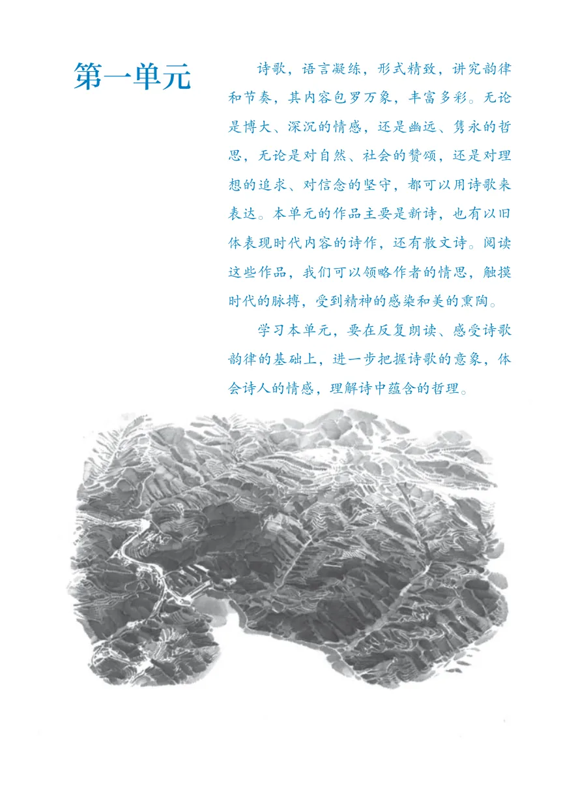
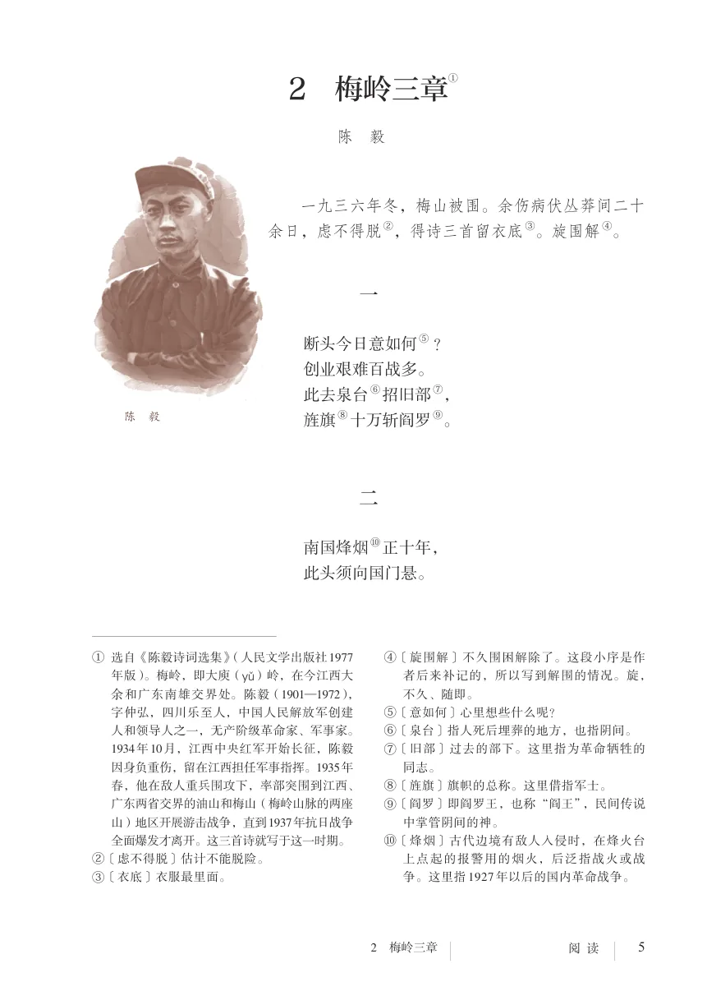
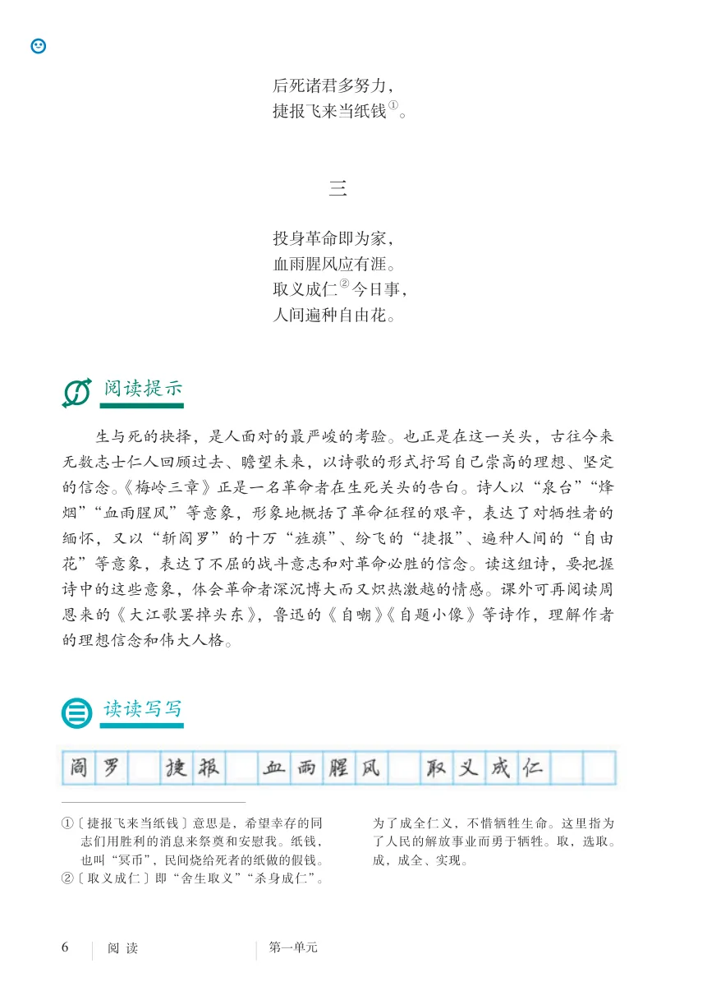
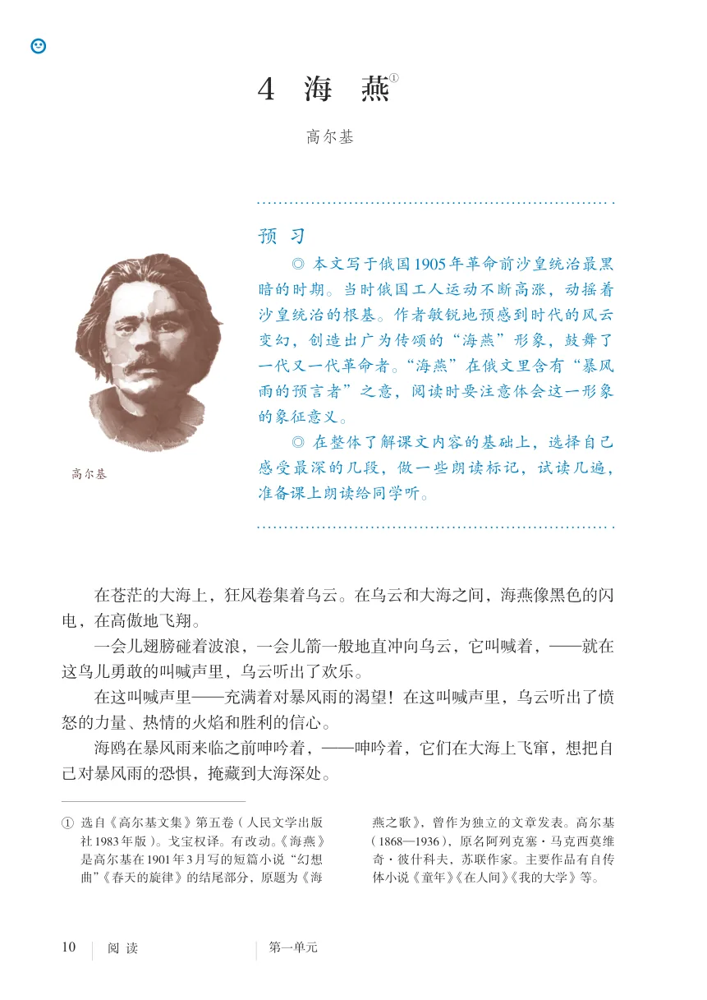
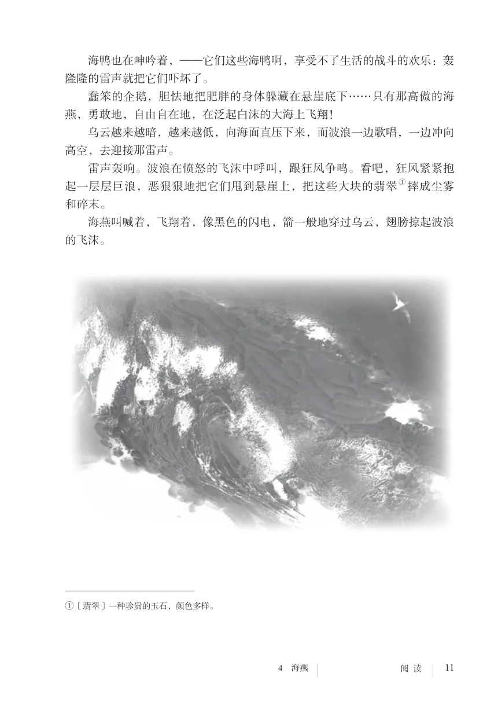
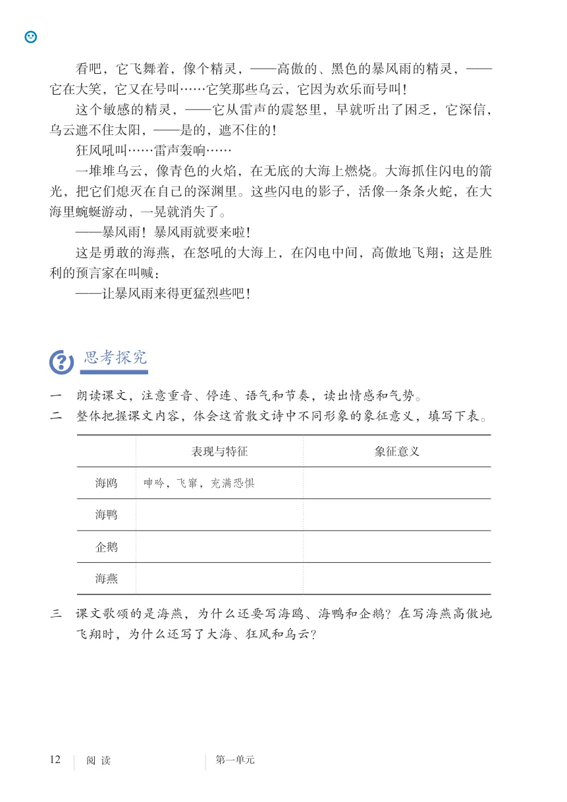
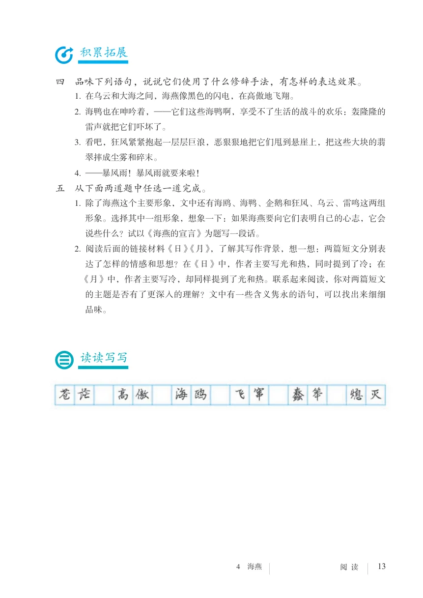
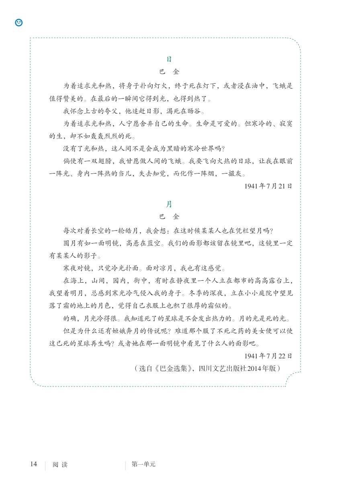
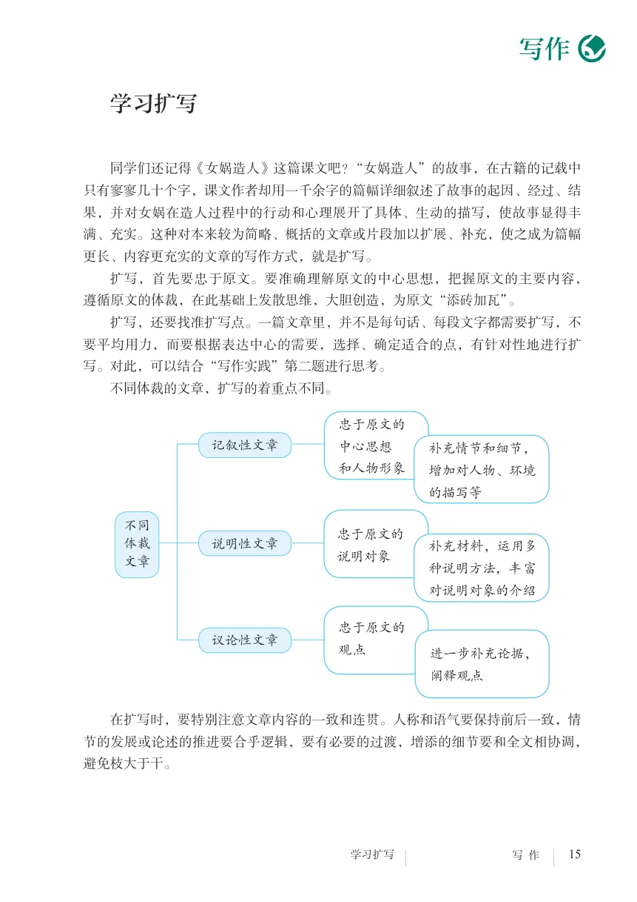
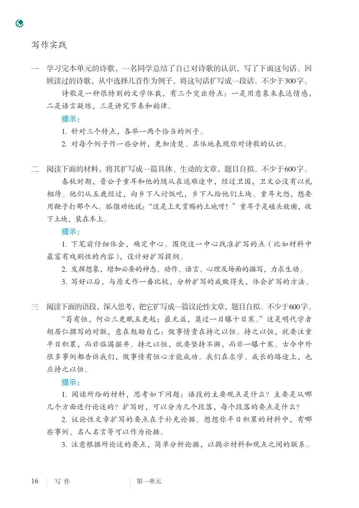

UNIT 1
第一单元
诗歌：把握意象，体会情感与哲理
单元导语
诗歌，语言凝练，形式精致，讲究韵律和节奏，其内容包罗万象，丰富多彩。无论是博大、深沉的情感，还是幽远、隽永的哲思，无论是对自然、社会的赞颂，还是对理想的追求、对信念的坚守，都可以用诗歌来表达。本单元的作品主要是新诗，也有以旧体表现时代内容的诗作，还有散文诗。阅读这些作品，我们可以领略作者的情思，触摸时代的脉搏，受到精神的感染和美的熏陶。
1 祖国啊，我亲爱的祖国
预 习
◎ 先默读诗歌，给不认识的字注音，了解诗歌的内容，把打动你的诗句
画出来 。
◎ 再大声朗读，体会诗歌的韵律和节奏，说说你的整体感受。
我是你河边上破旧的老水车，
数百年来纺着疲惫的歌；
我是你额上熏黑的矿灯，
照你在历史的隧洞里蜗行摸索；
我是干瘪的稻穗；是失修的路基；
是淤滩上的驳船
把纤绳深深
勒进你的肩膊；
——祖国啊！
我是贫困，
我是悲哀。
我是你祖祖辈辈
痛苦的希望啊，
是“飞天”袖间
千百年来未落到地面的花朵；
——祖国啊！
a 选自《舒婷的诗》（人民文学出版社2005年版）。我是你簇新的理想，
刚从神话的蛛网里挣脱；
我是你雪被下古莲的胚芽；
我是你挂着眼泪的笑涡；
我是新刷出的雪白的起跑线；
是绯红的黎明
正在喷薄；
——祖国啊！
我是你的十亿分之一，
是你九百六十万平方的总和；
你以伤痕累累的乳房
喂养了
迷惘的我、深思的我、沸腾的我；
那就从我的血肉之躯上
去取得
你的富饶、你的荣光、你的自由；
——祖国啊，
我亲爱的祖国！
1979年4月
思考探究
一 读这首诗要注意把握诗中的抒情主人公形象。诗中的“我”仅仅指诗人自
己吗？“我”与祖国是一种什么关系？
二 诗人用一系列意象，形象地抒发自己对祖国的情感。试结合每节诗中的意
象，分析诗人的情感脉络。
三 结合上下文，品味下列诗句的含义。
1. 我是你河边上破旧的老水车/数百年来纺着疲惫的歌
2. 是“飞天”袖间/千百年来未落到地面的花朵
3. 我是你簇新的理想/刚从神话的蛛网里挣脱
4. 是绯红的黎明/正在喷薄积累拓展
四 朗读并背诵这首诗。朗读前，先和同学讨论：如何把握朗读的语速、节
奏、语气和语调？
五 诗中所描写的意象，有些有下句承接（如“老水车”在“纺着疲惫的
歌”），有些则没有（如“干瘪的稻穗”）。仿照课文，在下面的横线处添
加一句，使它们尽可能与原诗句承接紧密，和谐一致。
1. 我是干瘪的稻穗， ；是失修的路基，
2. 我是你雪被下古莲的胚芽，
3. 我是你挂着眼泪的笑涡，
4. 我是新刷出的雪白的起跑线，
读读写写
不错，目前的中国，固然是江山破碎，国弊民穷，但谁能断言，中国没有一
个光明的前途呢？不，绝不会的，我们相信，中国一定有个可赞美的光明前途。中
华民族在很早以前，就造起了一座万里长城，开凿了几千里的运河，这就证明中华
民族伟大无比的创造力！中国在战斗之中一旦斩去了帝国主义的锁链，肃清自己阵
线内的汉奸卖国贼，得到了自由与解放，这种创造力，将会无限地发挥出来。到那
时，中国的面貌将会被我们改造一新。所有贫穷和灾荒，混乱和仇杀，饥饿和寒
冷，疾病和瘟疫，迷信和愚昧，以及那慢性的杀灭中华民族的鸦片毒物，这些等等
都是帝国主义带给我们可憎的赠品，将来也要随着帝国主义的赶走而离去中国了。
朋友，我相信，到那时，到处都是活跃跃的创造，到处都是日新月异的进步，欢歌
将代替了悲叹，笑脸将代替了哭脸，富裕将代替了贫穷，康健将代替了疾苦，智慧
将代替了愚昧，友爱将代替了仇杀，生之快乐将代替了死之悲哀，明媚的花园，将
代替了凄凉的荒地！这时，我们民族就可以无愧色地立在人类的面前，而生育我们
的母亲，也会最美丽地装饰起来，与世界上各位母亲平等地携手了。
——方志敏《可爱的中国》2* 梅岭三章
一九三六年冬，梅山被围。余伤病伏丛莽间二十
余日，虑不得脱 b，得诗三首留衣底 c。旋围解 d。
一
断头今日意如何 e ？
创业艰难百战多。
此去泉台 f招旧部 g，
陈 毅 旌旗 h十万斩阎罗 i。
二
南国烽烟 j正十年，
此头须向国门悬。
a 选自《陈毅诗词选集》（人民文学出版社1977 d 〔旋围解〕不久围困解除了。这段小序是作
年版）。梅岭，即大庾（yǔ）岭，在今江西大 者后来补记的，所以写到解围的情况。旋，
余和广东南雄交界处。陈毅（1901—1972）， 不久、随即。
字仲弘，四川乐至人，中国人民解放军创建 e 〔意如何〕心里想些什么呢？
人和领导人之一，无产阶级革命家、军事家。 f 〔泉台〕指人死后埋葬的地方，也指阴间。
1934年10月，江西中央红军开始长征，陈毅 g 〔旧部〕过去的部下。这里指为革命牺牲的
因身负重伤，留在江西担任军事指挥。1935年 同志。
春，他在敌人重兵围攻下，率部突围到江西、 h 〔旌旗〕旗帜的总称。这里借指军士。
广东两省交界的油山和梅山（梅岭山脉的两座 i 〔阎罗〕即阎罗王，也称“阎王”，民间传说
山）地区开展游击战争，直到1937年抗日战争 中掌管阴间的神。
全面爆发才离开。这三首诗就写于这一时期。 j 〔烽烟〕古代边境有敌人入侵时，在烽火台
b 〔虑不得脱〕估计不能脱险。 上点起的报警用的烟火，后泛指战火或战
c 〔衣底〕衣服最里面。 争。这里指1927 年以后的国内革命战争。后死诸君多努力，
捷报飞来当纸钱 a。
三
投身革命即为家，
血雨腥风应有涯。
取义成仁 b今日事，
人间遍种自由花。
阅读提示
生与死的抉择，是人面对的最严峻的考验。也正是在这一关头，古往今来
无数志士仁人回顾过去、瞻望未来，以诗歌的形式抒写自己崇高的理想、坚定
的信念。《梅岭三章》正是一名革命者在生死关头的告白。诗人以“泉台”“烽
烟”“血雨腥风”等意象，形象地概括了革命征程的艰辛，表达了对牺牲者的
缅怀，又以“斩阎罗”的十万“旌旗”、纷飞的“捷报”、遍种人间的“自由
花”等意象，表达了不屈的战斗意志和对革命必胜的信念。读这组诗，要把握
诗中的这些意象，体会革命者深沉博大而又炽热激越的情感。课外可再阅读周
恩来的《大江歌罢掉头东》，鲁迅的《自嘲》《自题小像》等诗作，理解作者
的理想信念和伟大人格。
读读写写
a 〔捷报飞来当纸钱〕意思是，希望幸存的同 为了成全仁义，不惜牺牲生命。这里指为
志们用胜利的消息来祭奠和安慰我。纸钱， 了人民的解放事业而勇于牺牲。取，选取。
也叫“冥币”，民间烧给死者的纸做的假钱。 成，成全、实现。
b 〔取义成仁〕即“舍生取义”“杀身成仁”。3* 短诗五首
短诗五首
月 夜 a
沈尹默
霜风呼呼的吹着,
月光明明的照着。
我和一株顶高的树并排立着，
却没有靠着。
萧红墓畔口占 b
戴望舒
走六小时寂寞的长途，
到你头边放一束红山茶， 是自言自语，又
我等待着，长夜漫漫， 是在寂寞地倾诉。诗
你却卧听着海涛闲话。 句简短却意味深长。
1944年11月20日
a 选自《沈尹默诗词集》（书目文献出版社1982 版）。口占，指即兴作诗词，不打草稿，随口
年版）。沈尹默（1883—1971），原名君默，浙 吟诵出来。戴望舒（1905—1950），原名戴梦
江吴兴（今湖州吴兴区）人，诗人、书法家。主 欧，浙江杭县（今杭州）人，现代诗人、翻
要作品有《秋明室杂诗》《秋明长短句》等。 译家。主要作品有诗集《望舒草》《望舒诗
b 选自《戴望舒选集》（人民文学出版社2005年 稿》《灾难的岁月》等。断 章 a
卞之琳
你站在桥上看风景，
“看”与“被看”， 看风景人在楼上看你。
主客流转，富有意趣。
明月装饰了你的窗子，
你装饰了别人的梦。
1935年10月
风雨吟 b
芦 荻
风从大地卷来，
雨从大地奔来。
郊原如海，
房舍如舟。
如何理解“年轻 我有年轻舵手的心，
舵手的心”？ 在大地风雨的海上。
1941年12月
a 选自《鱼目集》（浙江文艺出版社1997年版）。 b 选自《芦荻诗选》（花城出版社1986 年版）。
卞之琳（1910—2000），江苏海门人，诗人、 芦荻（1912—1994），原名陈培迪，广东南
翻译家。主要作品有诗集《鱼目集》《慰劳信 海人，诗人。主要作品有诗集《桑野》《驰驱
集》《雕虫纪历》，合集《汉园集》等。 集》等。统 一 a
聂鲁达
所有的叶是这一片，
所有的花是这一朵，
繁多是个谎言。 怎样理解“繁多
因为一切果实并无差异， 是个谎言”？
所有树木无非一棵，
整片大地是一朵花。
阅读提示
这几首短诗，语言凝练而含蓄，蕴含着丰富的情感和哲思，带给我
们审美的愉悦和多样的思考。阅读时，要注意把握诗歌的意象，比如《月
夜》中“顶高的树”，《萧红墓畔口占》中的“红山茶”，《风雨吟》中的
“风”“雨”“海”“舟”等，都营造出不同的氛围，传达出独特的诗意。
阅读诗歌，还可以联系诗人生平和创作背景，理解诗歌内容，把握诗人的
思想情感。例如《月夜》中，与大树“并排立着”的“我”，让人感受到一个寂
寞而又独立自主的形象；结合“五四运动”这一时代背景，就能进一步体会到，
这一形象代表着新一代青年知识分子自我意识的觉醒，以及他们对独立自由的
渴望。同学们不妨采用这种方法，试着自己解读这几首诗。
读读写写
a 选自《聂鲁达抒情诗选》（湖南文艺出版社 品有《二十首情诗和一支绝望的歌》《漫
1992年版）。陈实译。聂鲁达（1904—1973）， 歌》等。
智利诗人。获1971年诺贝尔文学奖。主要作4 海燕
海 燕 a
预 习
◎ 本文写于俄国1905年革命前沙皇统治最黑
暗的时期。当时俄国工人运动不断高涨，动摇着
沙皇统治的根基。作者敏锐地预感到时代的风云
变幻，创造出广为传颂的“海燕”形象，鼓舞了
一代又一代革命者。“海燕”在俄文里含有“暴风
雨的预言者”之意，阅读时要注意体会这一形象
的象征意义。
◎ 在整体了解课文内容的基础上，选择自己
高尔基 感受最深的几段，做一些朗读标记，试读几遍，
准备课上朗读给同学听。
在苍茫的大海上，狂风卷集着乌云。在乌云和大海之间，海燕像黑色的闪电，在高傲地飞翔。
一会儿翅膀碰着波浪，一会儿箭一般地直冲向乌云，它叫喊着，——就在这鸟儿勇敢的叫喊声里，乌云听出了欢乐。
在这叫喊声里——充满着对暴风雨的渴望！在这叫喊声里，乌云听出了愤怒的力量、热情的火焰和胜利的信心。
海鸥在暴风雨来临之前呻吟着，——呻吟着，它们在大海上飞窜，想把自己对暴风雨的恐惧，掩藏到大海深处。
a 选自《高尔基文集》第五卷（人民文学出版 燕之歌》，曾作为独立的文章发表。高尔基社1983 年版）。戈宝权译。有改动。《海燕》 （1868—1936），原名阿列克塞·马克西莫维是高尔基在1901年3月写的短篇小说“幻想 奇·彼什科夫，苏联作家。主要作品有自传曲”《春天的旋律》的结尾部分，原题为《海 体小说《童年》《在人间》《我的大学》等。
海鸭也在呻吟着，——它们这些海鸭啊，享受不了生活的战斗的欢乐：轰隆隆的雷声就把它们吓坏了。
蠢笨的企鹅，胆怯地把肥胖的身体躲藏在悬崖底下……只有那高傲的海燕，勇敢地，自由自在地，在泛起白沫的大海上飞翔！
乌云越来越暗，越来越低，向海面直压下来，而波浪一边歌唱，一边冲向高空，去迎接那雷声。
雷声轰响。波浪在愤怒的飞沫中呼叫，跟狂风争鸣。看吧，狂风紧紧抱起一层层巨浪，恶狠狠地把它们甩到悬崖上，把这些大块的翡翠 a摔成尘雾和碎末。
海燕叫喊着，飞翔着，像黑色的闪电，箭一般地穿过乌云，翅膀掠起波浪的飞沫。
a 〔翡翠〕一种珍贵的玉石，颜色多样。
看吧，它飞舞着，像个精灵，——高傲的、黑色的暴风雨的精灵，——它在大笑，它又在号叫……它笑那些乌云，它因为欢乐而号叫！
这个敏感的精灵，——它从雷声的震怒里，早就听出了困乏，它深信，乌云遮不住太阳，——是的，遮不住的！
狂风吼叫……雷声轰响……
一堆堆乌云，像青色的火焰，在无底的大海上燃烧。大海抓住闪电的箭光，把它们熄灭在自己的深渊里。这些闪电的影子，活像一条条火蛇，在大海里蜿蜒游动，一晃就消失了。
——暴风雨！暴风雨就要来啦！
这是勇敢的海燕，在怒吼的大海上，在闪电中间，高傲地飞翔；这是胜利的预言家在叫喊：
——让暴风雨来得更猛烈些吧！
思考探究
一 朗读课文，注意重音、停连、语气和节奏，读出情感和气势。
二 整体把握课文内容，体会这首散文诗中不同形象的象征意义，填写下表。
表现与特征 象征意义
海鸥 呻吟，飞窜，充满恐惧
海鸭
企鹅
海燕
三 课文歌颂的是海燕，为什么还要写海鸥、海鸭和企鹅？在写海燕高傲地
飞翔时，为什么还写了大海、狂风和乌云？
积累拓展
四 品味下列语句，说说它们使用了什么修辞手法，有怎样的表达效果。
1. 在乌云和大海之间，海燕像黑色的闪电，在高傲地飞翔。
2. 海鸭也在呻吟着，——它们这些海鸭啊，享受不了生活的战斗的欢乐：轰隆隆的
雷声就把它们吓坏了。
3. 看吧，狂风紧紧抱起一层层巨浪，恶狠狠地把它们甩到悬崖上，把这些大块的翡
翠摔成尘雾和碎末。
4. ——暴风雨！暴风雨就要来啦！
五 从下面两道题中任选一道完成。
1. 除了海燕这个主要形象，文中还有海鸥、海鸭、企鹅和狂风、乌云、雷鸣这两组
形象。选择其中一组形象，想象一下：如果海燕要向它们表明自己的心志，它会
说些什么？试以《海燕的宣言》为题写一段话。
2. 阅读后面的链接材料《日》《月》，了解其写作背景，想一想：两篇短文分别表
达了怎样的情感和思想？在《日》中，作者主要写光和热，同时提到了冷；在
《月》中，作者主要写冷，却同样提到了光和热。联系起来阅读，你对两篇短文
的主题是否有了更深入的理解？文中有一些含义隽永的语句，可以找出来细细
品味。
读读写写
日
巴 金
为着追求光和热，将身子扑向灯火，终于死在灯下，或者浸在油中，飞蛾是
值得赞美的。在最后的一瞬间它得到光，也得到热了。
我怀念上古的夸父，他追赶日影，渴死在旸谷。
为着追求光和热，人宁愿舍弃自己的生命。生命是可爱的。但寒冷的、寂寞
的生，却不如轰轰烈烈的死。
没有了光和热，这人间不是会成为黑暗的寒冷世界吗？
倘使有一双翅膀，我甘愿做人间的飞蛾。我要飞向火热的日球，让我在眼前
一阵光、身内一阵热的当儿，失去知觉，而化作一阵烟，一撮灰。
1941年7月21日
月
巴 金
每次对着长空的一轮皓月，我会想：在这时候某某人也在凭栏望月吗？
圆月有如一面明镜，高悬在蓝空。我们的面影都该留在镜里吧，这镜里一定
有某某人的影子。
寒夜对镜，只觉冷光扑面。面对凉月，我也有这感觉。
在海上，山间，园内，街中，有时在静夜里一个人立在都市的高高露台上，
我望着明月，总感到寒光冷气侵入我的身子。冬季的深夜，立在小小庭院中望见
落了霜的地上的月色，觉得自己衣服上也积了很厚的霜似的。
的确，月光冷得很。我知道死了的星球是不会发出热力的。月的光是死的光。
但是为什么还有姮娥奔月的传说呢？难道那个服了不死之药的美女便可以使
这已死的星球再生吗？或者她在那一面明镜中看见了什么人的面影吧。
1941年7月22日
（选自《巴金选集》，四川文艺出版社2014年版）
写作：学习扩写
学习扩写
同学们还记得《女娲造人》这篇课文吧？“女娲造人”的故事，在古籍的记载中只有寥寥几十个字，课文作者却用一千余字的篇幅详细叙述了故事的起因、经过、结果，并对女娲在造人过程中的行动和心理展开了具体、生动的描写，使故事显得丰满、充实。这种对本来较为简略、概括的文章或片段加以扩展、补充，使之成为篇幅更长、内容更充实的文章的写作方式，就是扩写。
扩写，首先要忠于原文。要准确理解原文的中心思想，把握原文的主要内容，遵循原文的体裁，在此基础上发散思维，大胆创造，为原文“添砖加瓦”。
扩写，还要找准扩写点。一篇文章里，并不是每句话、每段文字都需要扩写，不要平均用力，而要根据表达中心的需要，选择、确定适合的点，有针对性地进行扩写。对此，可以结合“写作实践”第二题进行思考。
不同体裁的文章，扩写的着重点不同。
忠于原文的
记叙性文章 中心思想 补充情节和细节，
和人物形象 增加对人物、环境
的描写等
不同
忠于原文的
体裁 说明性文章 补充材料，运用多
说明对象 文章 种说明方法，丰富
对说明对象的介绍
忠于原文的
议论性文章
观点 进一步补充论据，
阐释观点
在扩写时，要特别注意文章内容的一致和连贯。人称和语气要保持前后一致，情节的发展或论述的推进要合乎逻辑，要有必要的过渡，增添的细节要和全文相协调，避免枝大于干。
写作实践
一 学习完本单元的诗歌，一名同学总结了自己对诗歌的认识，写了下面这句话。回
顾读过的诗歌，从中选择几首作为例子，将这句话扩写成一段话。不少于300字。
诗歌是一种很特别的文学体裁，有三个突出特点：一是用意象来表达情感，
二是语言凝练，三是讲究节奏和韵律。
提示：
1. 针对三个特点，各举一两个恰当的例子。
2. 对每个例子作一些分析，更加清楚、具体地表现你对诗歌的认识。
二 阅读下面的材料，将其扩写成一篇具体、生动的文章，题目自拟。不少于600字。
春秋时期，晋公子重耳和他的随从在逃难途中，经过卫国，卫文公没有以礼
相待。他们从五鹿经过，向乡下人讨饭吃，乡下人给他们土块。重耳大怒，想要
用鞭子打那个人。狐偃劝他说：“这是上天赏赐的土地呀！”重耳于是磕头致谢，收
下土块，装在车上。
提示：
1. 下笔前仔细体会，确定中心。围绕这一中心找准扩写的点（比如材料中
最富有戏剧性的内容），设计好扩写提纲。
2. 发挥想象，增加必要的神态、动作、语言、心理及场面的描写，力求生动。
3. 写好以后，与原文作一番比较，分析扩写的成败得失，体会扩写的方法。
三 阅读下面的语段，深入思考，把它扩写成一篇议论性文章，题目自拟。不少于600字。
“苟有恒，何必三更眠五更起；最无益，莫过一日曝十日寒。”这是明代学者
胡居仁撰写的对联，意在勉励自己：做事情贵在持之以恒。持之以恒，就要注重
平日积累，而非临渴掘井。持之以恒，就要坚持不懈，而非一曝十寒。古今中外
很多事例都告诉我们，做事情有恒心方能成功。我们在求学、成长的路途上，也
应持之以恒。
提示：
1. 阅读所给的材料，思考如下问题：语段的主要观点是什么？主要是从哪
几个方面进行论述的？扩写时，可以分为几个段落，每个段落的要点是什么？
2. 议论性文章扩写的要点在于补充论据。想想你平日积累的材料中，有哪
些事例、名人名言等可以作为论据。
3. 注意根据所论述的要点，简单分析论据，以揭示材料和观点之间的联系。
原书页面与插图
按课文和栏目分组展示本单元全部原书页面；图片保持原比例，不使用外部资源。
单元导语
返回文字内容 ↑
1 祖国啊，我亲爱的祖国
返回文字内容 ↑2* 梅岭三章
返回文字内容 ↑

3* 短诗五首
返回文字内容 ↑4 海燕
返回文字内容 ↑




写作：学习扩写
返回文字内容 ↑
